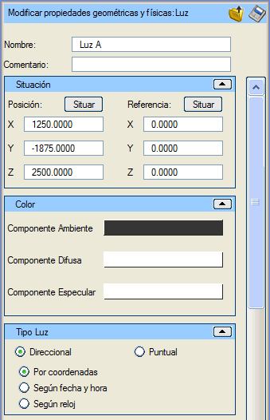
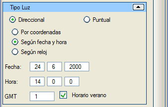
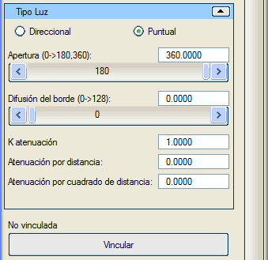

| |
|
Işık
|
|
Genel Bilgiler Bu menüde, ışıkların tüm özellikleri ayarlanabilir. OpenGL'in mevcut uygulamaları nedeniyle aynı anda 8'den fazla "açık" ışık olamaz. Işıklar 2 ana türde olabilir: yönlü veya noktasal. Yönlü ışıklar, Güneş ışığının Dünya'dan nasıl algılandığına benzer; noktasal ışıklar ise kendi içinde iki türe ayrılabilir: küresel veya konik. Küresel ışıklar bir ampule, konik ışıklar ise bir spot lambasına benzer. Varsayılan olarak, Sanal 3B, sahnenin tüm nesnelerin net bir şekilde görülebilmesi için aydınlatılmasını sağlayan iki adet yönlü ışık sunar. Seçenekler İsim: ışığı bir isimle tanımlamayı sağlar. Yorum: ışığa açıklayıcı bir yorum eklemeyi sağlar.  Işığı sahne dışında bir dosyaya kaydetmeyi sağlar. Işığı sahne dışında bir dosyaya kaydetmeyi sağlar. Bir ışık dosyasını yükler. Bir ışık dosyasını yükler.Konum (X, Y, Z): ışığın bulunduğu tam noktayı belirtir. Referans Noktası (X, Y, Z): ışığın yöneldiği tam noktayı belirtir. Yönlü ve konik noktasal ışıklarda, bu değerler ışığın yönünü belirtir. Ortam (Ambient) Bileşeni: bu ışığın, nesnelerin malzemelerinin ortam bileşenini hangi renk ve yoğunlukta etkileyeceğini ayarlamayı sağlar. Dağınık (Diffuse) Bileşen: bu ışığın, nesnelerin malzemelerinin dağınık bileşenini hangi renk ve yoğunlukta etkileyeceğini belirtir; bu, nesnelere ulaşan ışıktır. Yansıma (Specular) Bileşeni: bu ışığın, nesnelerin malzemelerinin yansıma bileşenini hangi renk ve yoğunlukta etkileyeceğini belirtir; bu, nesnelerin parlak alanlarda yansıttığı ışıktır. Bu üç bileşenin birbiriyle tutarlı renklere sahip olması gerekir, ancak kullanıcı tarafından istenildiği gibi yapılandırılabilirler. Buraya kadar olanlar tüm ışıklar için genel seçeneklerdir. Yönlü Işık  Bunlar, sahnedeki konumdan bağımsız olarak tüm ışık ışınlarının paralel olarak ilerlediği ışıklardır. Bu ışıkların konumu, önceki menü resminde olduğu gibi koordinatlara göre, kullanıcının sağladığı bir tarih ve saate göre veya bilgisayarın saatine göre belirlenebilir. Noktasal Işık  Noktasal ışıkların, yoğunluklarının maksimum olduğu bir konumu vardır; bu noktadan uzaklaştıkça ışıkların zayıflaması artar. Noktasal ışıklar, sahnedeki nesnelerle birlikte hareket edip yönlenmeleri için bu nesnelere bağlanabilir. Noktasal ışıklar bir açılma açısı ile tanımlanır; OpenGL 0 ila 180 derece ve 360 derece açıları destekler. Küresel Işık Bir küresel ışık, bir noktadan her yöne ışınlar gönderir. Açılma açısı 360 derecedir. Ampuller gibidirler. Konik (Spot) Işık Bir konik ışık, belirli bir yönde bir açılma açısına göre ışınlar gönderir. Açılma Açısı: ışığın açılma açısını belirtir. Kenar Yayılımı: ışığın aydınlattığı alanın kenarının keskin mi yoksa dağınık mı olacağını belirtir. K Zayıflama: OpenGL'in sabit zayıflama katsayısı. Mesafeye Göre Zayıflama: ışık ile aydınlatılan nokta arasındaki mesafeye göre zayıflama faktörü. Mesafenin Karesine Göre Zayıflama: ışık ile aydınlatılan nokta arasındaki mesafenin karesine göre zayıflama faktörü. Varsayılan zayıflama değerleri, zayıflamanın minimum olması içindir. |